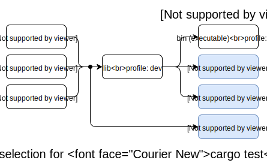

Profiles
Profiles provide a way to alter the compiler settings, influencing things like optimizations and debugging symbols.
Cargo has 4 built-in profiles: dev, release, test, and bench. It
automatically chooses the profile based on which command is being run, the
package and target that is being built, and command-line flags like
--release. The selection process is described below.
Profile settings can be changed in Cargo.toml with the
[profile] table. Within each named profile, individual settings can be changed
with key/value pairs like this:
[profile.dev]
opt-level = 1 # Use slightly better optimizations.
overflow-checks = false # Disable integer overflow checks.
Cargo only looks at the profile settings in the Cargo.toml manifest at the
root of the workspace. Profile settings defined in dependencies will be
ignored.
Additionally, profiles can be overridden from a config definition.
Specifying a profile in a config file or environment variable will override
the settings from Cargo.toml.
Profile settings
The following is a list of settings that can be controlled in a profile.
opt-level
The opt-level setting controls the -C opt-level flag which controls the level
of optimization. Higher optimization levels may produce faster runtime code at
the expense of longer compiler times. Higher levels may also change and
rearrange the compiled code which may make it harder to use with a debugger.
The valid options are:
0: no optimizations1: basic optimizations2: some optimizations3: all optimizations"s": optimize for binary size"z": optimize for binary size, but also turn off loop vectorization.
It is recommended to experiment with different levels to find the right
balance for your project. There may be surprising results, such as level 3
being slower than 2, or the "s" and "z" levels not being necessarily
smaller. You may also want to reevaluate your settings over time as newer
versions of rustc changes optimization behavior.
See also Profile Guided Optimization for more advanced optimization techniques.
debug
The debug setting controls the -C debuginfo flag which controls the
amount of debug information included in the compiled binary.
The valid options are:
0orfalse: no debug info at all1: line tables only2ortrue: full debug info
You may wish to also configure the split-debuginfo option
depending on your needs as well.
split-debuginfo
The split-debuginfo setting controls the -C split-debuginfo flag which
controls whether debug information, if generated, is either placed in the
executable itself or adjacent to it.
This option is a string and acceptable values are the same as those the
compiler accepts. The default value for this option
is unpacked on macOS for profiles that have debug information otherwise
enabled. Otherwise the default for this option is documented with rustc and is platform-specific. Some options are only
available on the nightly channel. The Cargo default may change in the future
once more testing has been performed, and support for DWARF is stabilized.
debug-assertions
The debug-assertions setting controls the -C debug-assertions flag which
turns cfg(debug_assertions) conditional compilation on or off. Debug
assertions are intended to include runtime validation which is only available
in debug/development builds. These may be things that are too expensive or
otherwise undesirable in a release build. Debug assertions enables the
debug_assert! macro in the standard library.
The valid options are:
true: enabledfalse: disabled
overflow-checks
The overflow-checks setting controls the -C overflow-checks flag which
controls the behavior of runtime integer overflow. When overflow-checks are
enabled, a panic will occur on overflow.
The valid options are:
true: enabledfalse: disabled
lto
The lto setting controls the -C lto flag which controls LLVM's link
time optimizations. LTO can produce better optimized code, using
whole-program analysis, at the cost of longer linking time.
The valid options are:
false: Performs "thin local LTO" which performs "thin" LTO on the local crate only across its codegen units. No LTO is performed if codegen units is 1 or opt-level is 0.trueor"fat": Performs "fat" LTO which attempts to perform optimizations across all crates within the dependency graph."thin": Performs "thin" LTO. This is similar to "fat", but takes substantially less time to run while still achieving performance gains similar to "fat"."off": Disables LTO.
See also the -C linker-plugin-lto rustc flag for cross-language LTO.
panic
The panic setting controls the -C panic flag which controls which panic
strategy to use.
The valid options are:
"unwind": Unwind the stack upon panic."abort": Terminate the process upon panic.
When set to "unwind", the actual value depends on the default of the target
platform. For example, the NVPTX platform does not support unwinding, so it
always uses "abort".
Tests, benchmarks, build scripts, and proc macros ignore the panic setting.
The rustc test harness currently requires unwind behavior. See the
panic-abort-tests unstable flag which enables abort behavior.
Additionally, when using the abort strategy and building a test, all of the
dependencies will also be forced to build with the unwind strategy.
incremental
The incremental setting controls the -C incremental flag which controls
whether or not incremental compilation is enabled. Incremental compilation
causes rustc to save additional information to disk which will be reused
when recompiling the crate, improving re-compile times. The additional
information is stored in the target directory.
The valid options are:
true: enabledfalse: disabled
Incremental compilation is only used for workspace members and "path" dependencies.
The incremental value can be overridden globally with the CARGO_INCREMENTAL
environment variable or the build.incremental config variable.
codegen-units
The codegen-units setting controls the -C codegen-units flag which
controls how many "code generation units" a crate will be split into. More
code generation units allows more of a crate to be processed in parallel
possibly reducing compile time, but may produce slower code.
This option takes an integer greater than 0.
The default is 256 for incremental builds, and 16 for non-incremental builds.
rpath
The rpath setting controls the -C rpath flag which controls
whether or not rpath is enabled.
Default profiles
dev
The dev profile is used for normal development and debugging. It is the
default for build commands like cargo build.
The default settings for the dev profile are:
[profile.dev]
opt-level = 0
debug = true
split-debuginfo = '...' # Platform-specific.
debug-assertions = true
overflow-checks = true
lto = false
panic = 'unwind'
incremental = true
codegen-units = 256
rpath = false
release
The release profile is intended for optimized artifacts used for releases
and in production. This profile is used when the --release flag is used, and
is the default for cargo install.
The default settings for the release profile are:
[profile.release]
opt-level = 3
debug = false
split-debuginfo = '...' # Platform-specific.
debug-assertions = false
overflow-checks = false
lto = false
panic = 'unwind'
incremental = false
codegen-units = 16
rpath = false
test
The test profile is used for building tests, or when benchmarks are built in
debug mode with cargo build.
The default settings for the test profile are:
[profile.test]
opt-level = 0
debug = 2
split-debuginfo = '...' # Platform-specific.
debug-assertions = true
overflow-checks = true
lto = false
panic = 'unwind' # This setting is always ignored.
incremental = true
codegen-units = 256
rpath = false
bench
The bench profile is used for building benchmarks, or when tests are built
with the --release flag.
The default settings for the bench profile are:
[profile.bench]
opt-level = 3
debug = false
split-debuginfo = '...' # Platform-specific.
debug-assertions = false
overflow-checks = false
lto = false
panic = 'unwind' # This setting is always ignored.
incremental = false
codegen-units = 16
rpath = false
Build Dependencies
All profiles, by default, do not optimize build dependencies (build scripts, proc macros, and their dependencies). The default settings for build overrides are:
[profile.dev.build-override]
opt-level = 0
codegen-units = 256
[profile.release.build-override]
opt-level = 0
codegen-units = 256
Build dependencies otherwise inherit settings from the active profile in use, as described below.
Profile selection
The profile used depends on the command, the package, the Cargo target, and
command-line flags like --release.
Build commands like cargo build, cargo rustc, cargo check, and
cargo run default to using the dev profile. The --release flag may be
used to switch to the release profile.
The cargo install command defaults to the release profile, and may use
the --debug flag to switch to the dev profile.
Test targets are built with the test profile by default. The --release
flag switches tests to the bench profile.
Bench targets are built with the bench profile by default. The cargo build command can be used to build a bench target with the test profile to
enable debugging.
Note that when using the cargo test and cargo bench commands, the
test/bench profiles only apply to the final test executable. Dependencies
will continue to use the dev/release profiles. Also note that when a
library is built for unit tests, then the library is built with the test
profile. However, when building an integration test target, the library target
is built with the dev profile and linked into the integration test
executable.

Overrides
Profile settings can be overridden for specific packages and build-time
crates. To override the settings for a specific package, use the package
table to change the settings for the named package:
# The `foo` package will use the -Copt-level=3 flag.
[profile.dev.package.foo]
opt-level = 3
The package name is actually a Package ID Spec, so you can
target individual versions of a package with syntax such as
[profile.dev.package."foo:2.1.0"].
To override the settings for all dependencies (but not any workspace member),
use the "*" package name:
# Set the default for dependencies.
[profile.dev.package."*"]
opt-level = 2
To override the settings for build scripts, proc macros, and their
dependencies, use the build-override table:
# Set the settings for build scripts and proc-macros.
[profile.dev.build-override]
opt-level = 3
Note: When a dependency is both a normal dependency and a build dependency, Cargo will try to only build it once when
--targetis not specified. When usingbuild-override, the dependency may need to be built twice, once as a normal dependency and once with the overridden build settings. This may increase initial build times.
The precedence for which value is used is done in the following order (first match wins):
[profile.dev.package.name]— A named package.[profile.dev.package."*"]— For any non-workspace member.[profile.dev.build-override]— Only for build scripts, proc macros, and their dependencies.[profile.dev]— Settings inCargo.toml.- Default values built-in to Cargo.
Overrides cannot specify the panic, lto, or rpath settings.
Overrides and generics
The location where generic code is instantiated will influence the optimization settings used for that generic code. This can cause subtle interactions when using profile overrides to change the optimization level of a specific crate. If you attempt to raise the optimization level of a dependency which defines generic functions, those generic functions may not be optimized when used in your local crate. This is because the code may be generated in the crate where it is instantiated, and thus may use the optimization settings of that crate.
For example, nalgebra is a library which defines vectors and matrices making
heavy use of generic parameters. If your local code defines concrete nalgebra
types like Vector4<f64> and uses their methods, the corresponding nalgebra
code will be instantiated and built within your crate. Thus, if you attempt to
increase the optimization level of nalgebra using a profile override, it may
not result in faster performance.
Further complicating the issue, rustc has some optimizations where it will
attempt to share monomorphized generics between crates. If the opt-level is 2
or 3, then a crate will not use monomorphized generics from other crates, nor
will it export locally defined monomorphized items to be shared with other
crates. When experimenting with optimizing dependencies for development,
consider trying opt-level 1, which will apply some optimizations while still
allowing monomorphized items to be shared.